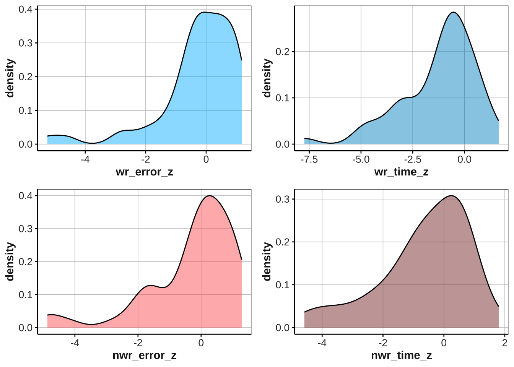

Lesson 3
3rd/5th May, 2023
1 Last time…
renameselectfiltermutate
2 Homework solutions
2.1 Exercise 1
Upload the “reading_tests.csv” file
Filter participants in
class3Select
wr_errorscolumnMutate the
ID,classanddiagnosiscolumns into factorCreate the column
group_meanwith value 2.32Create the column
group_sdwith the value 2.57Create the column
error_zwhich is given by the following calculation:- group_mean - wr_errors / group_sd
Note: Try to write everything in one single code!
read_csv("reading_tests.csv") %>%
# filter participants in class 3
filter(class == 3) %>%
# select until wr_errors
select(ID:wr_errors) %>%
# change ID, class and diagnosis into factors
mutate_if(is.character, as.factor) %>%
# or: mutate(ID = as.factor(ID), class = as.factor(class), diagnosis = as.factor(diagnosis))
# create the columns group mean = 2.32, group sd = 2.57
mutate(
group_mean = 2.32,
group_sd = 2.57,
# create column error_z: group_mean - wr_errors / group_sd
error_z = (group_mean - wr_errors) / group_sd
) -> ex12.2 Exercise 2 (CHALLENGE!)
PLEASE NOTE: In the “challenge” exercises, we give you NEW FUNCTIONS ON PURPOSE.
You can try it out at home, and see whether you can get to the solution. A lot of coding is learnt online, so this is a way to let you find solutions on your own. We will certainly explain this in class!
Similarly to exercise 1:
Filter participants in class 4 and 5
Select
wr_timeUsing if_else (or case_when), create the columns:
group_mean:if class is 4, group mean is 62, if class is 5, group mean is 61.26group_sd:if class is 4, group sd is 12.65, if class is 5, group mean is 11.73
Create the column
time_zwhich is given by the following formula:- group_mean - wr_time / group_sd
# solution 1: if else
read_csv("reading_tests.csv") %>%
# filter class 3 and 4
filter(class == 4 | class == 5) %>%
# select till wr_time
select(ID:wr_time) %>%
# group mean based on class
mutate(
group_mean = if_else(
# syntax: if_else(condition, value if condition is met, value is condition is not met)
class == 4, 62, 61.26
),
group_sd = if_else(
class == 4, 12.65, 11.73
),
# create time_z
time_z = (group_mean-wr_time)/group_sd
) -> ex2
# solution 2: case when
read_csv("reading_tests.csv") %>%
# filter class 3 and 4
filter(class == 4 | class == 5) %>%
# select till wr_time
select(ID:wr_time) %>%
# group mean based on class
mutate(
group_mean = case_when(
# syntax: case_when(condition 1 ~ value,
# condition 2 ~ value)
class == 4 ~ 62,
class == 5 ~ 61.26
),
# group sd based on class
group_sd = case_when(
class == 4 ~ 12.65,
class == 5 ~ 11.73
),
# create time_z
time_z = (group_mean-wr_time)/group_sd
) -> ex2a3 Tidyverse pt.2
- Step 1: Load libraries
# load libraries
library(tidyverse)
library(kableExtra)
library(unikn)
library(dlookr)- Step 2: Upload your data in R
read_csv("reading_tests.csv") -> dfID: participant’s identification codediagnosis: diagnosis of dyslexia (YES/NO)class: participants’ education level (1 to 5, and “uni”)wr_time:word reading timewr_errors:word reading errorsnwr_time:nonword reading timenwr_errors:nonword reading errors
3.1 mutate and if_else
mutate()is used to create new columns or modify existing columns in a data frame. Thus, it is used to add new variables based on calculations from existing variables or modify existing variables in place.if_else()function is often used in conjunction withmutate(). It allows you to conditionally modify data in a column based on some logical condition. The syntax for usingif_else()withinmutate()is as follows:
mutate(data, new_column = if_else(condition, true_value, false_value))EXERCISE 1
# let's create a new column: `group` which is given by the following conditions:
# 1. if wr_time is longer than 70 seconds but shorter than 90 seconds, group is "TD"
# 2. if wr_time is longer than 90 seconds, group is "DYS" 3.2 mutate and case_when
In addition to
if_else(), another useful function that can be used in conjunction withmutate()iscase_when().case_when()allows you to specify multiple conditions and values in a single expression, making it useful for more complex conditional modifications of data.
The basic syntax for using case_when() within mutate() is as follows:
mutate(data, new_column = case_when(
condition1 ~ value1,
condition2 ~ value2,
condition3 ~ value3,
TRUE ~ default_value
))EXERCISE 2
Given that the reading tests participants performed were standardized, there are specific performance ranges (FDP) based on (non)word reading time and errors for each class.
- This exercises focuses on class 4 and class 5, and on word reading time
Let’s have a look at the following table:
| CLASS | RII | RA | PS | CCI |
|---|---|---|---|---|
| 4 | >= 84.58 | time < 84.58 time >= 75 |
time < 75 time >54 |
time <= 54 |
| 5 | >= 84 | time < 84 time >= 73 |
time < 73 time >54 |
time <= 54 |
# ex 2
# write a code to create a FDP column, which should have the following values: RII, RA, PS, CII based on the conditions specified in the table above 3.3 left_join
left_join()allows you to combine two data framesleft_joinreturns all rows from the left data frame and any matching rows from the right data frame, with non-matching rows in the right data frame omitted.
left_join(x, y, by = "common.col.name")# again, we only focus on word reading time
tibble(class = c(1,2,3,4,5),
group_mean = c(77.91, 75.51, 57.07, 55.68, 54.98),
group_sd = c(20.57,18.62,13.51,12.43,11.62)) %>%
mutate(class = as.character(class))-> group.values
# now we want to add these values stored in `group values` for each row in the df, depeding on participants' class:
left_join(df, group.values, by = "class") -> joined.df 3.4 group_by() - summarize() and ungroup()
group_byis used to group a data frame by one or more variables.Once the data is grouped, you can apply summary functions to each group using
summarize.The syntax for using
group_byis as follows:
group_by(data, var1, var2, ...)summarizeis used to apply summary functions to each group of the data created bygroup_by. The syntax for usingsummarizeis as follows:
summarize(data, var1 = func1(var2), var3 = func2(var4), ...)EXERCISE 3
check what is the mean and sd of word reading errors and time as well as nonword reading errors and time by class
output it as a kable object
read_csv("reading_tests2.csv") %>%
filter(class != "uni") %>%
dplyr::select(ID:class, wr_time_z, wr_error_z, nwr_time_z, nwr_error_z)-> df2
# ex 3EXERCISE 3.A
check what is the mean and sd of word reading errors and time as well as nonword reading errors and time by diagnosis
output it as a kable object
# ex 3aWinter B., Exercise Chapter 2
# read data
read_csv("nettle_1999_climate.csv") -> nettle
# quick visualization of the data frame
head(nettle)# A tibble: 6 × 5
Country Population Area MGS Langs
<chr> <dbl> <dbl> <dbl> <dbl>
1 Algeria 4.41 6.38 6.6 18
2 Angola 4.01 6.1 6.22 42
3 Australia 4.24 6.89 6 234
4 Bangladesh 5.07 5.16 7.4 37
5 Benin 3.69 5.05 7.14 52
6 Bolivia 3.88 6.04 6.92 38# Exercise 4 p. 51
# code 1: reduce the dataset to only countries with Population < 4 - save it as 'small.countries'
small.countries <- filter(nettle, # data
Population <4) # filter condition
# code 2: create the MGS categorical variable. The data has a column called 'MGS', which is numerical, thus a continuous variable. If MGS < 6, then the new MGS.cat variable is "dry", else is "fertile".
nettle.mgs <- mutate(small.countries, # data
MGS.cat = # name of new column
if_else(
MGS <6, # condition
"dry", # true value
"fertile" # false value
))
# code 3: group data for later summarizing, i.e., in code 4, we will summarize (e.g., compute the language counts by MGS.cat: dry vs. fertile)
grouped.nettle.mgs <- group_by(nettle.mgs, # data
MGS.cat)
# code 4: Compute language counts by MGS (dry vs. fertile)
tab <- summarize(grouped.nettle.mgs, # data
lang.sum = sum(Langs))
kable(tab) %>% kable_styling()| MGS.cat | lang.sum |
|---|---|
| dry | 447 |
| fertile | 1717 |
# Condense all of these steps into a single pipeline4 Introduction to ggplot()
4.1 Checking variables distribution with geom_density()
ggplot()is a powerful tool to visualize your dataLet’s check the distribution of our variables
The following code combines three functions:
ggplot(aes(x = , y = ))which allows you to create a plot. You define what goes on the x and y axis with theaes()functiongeom_densitywhich defines the type of plot (here, a density plot)ggpubr::ggarrange()which allows you to combine different plots. The syntax is:
ggpubr::ggarrange(
plot1,
plot2,
plot3,
...,
# decide whether the plots have a common legend. FALSE by default
common.legend = T,
# set the number of rows and columns
nrow = 2,
ncol = 1
)
# write ?ggarrange in the console for more information!ggpubr::ggarrange(
# plot 1: distribution of wr_errors. Note, geom_density() only requrie the value x
df2 %>% ggplot(aes(x = wr_error_z)) + geom_density(alpha = .5, fill = "deepskyblue") + theme(legend.position = "none"),
# plot 2:
df2 %>% ggplot(aes(x = wr_time_z)) + geom_density(alpha = .5, fill = "deepskyblue3") + theme(legend.position = "none"),
# plot 3:
df2 %>% ggplot(aes(x = nwr_error_z)) + geom_density(alpha = .5, fill = "indianred1") + theme(legend.position = "none"),
# plot 4:
df2 %>% ggplot(aes(x = nwr_time_z)) + geom_density(alpha = .5, fill = "indianred4") + theme(legend.position = "none"),
common.legend = F
)
5 Homework
5.1 Exercise 1
Using the df2 data frame saved above:
calculate the mean and standard deviation of
wr_time_zandnwr_time_zfor each diagnosis group.Round the mean and standard deviation to two decimal places using the
roundfunction e.g.round(mean(column),2)Finally, output it as a
kableobject
# write your code here5.2 Exercise 2
Using the
df2data frame saved above, create four box-plots showing the distribution ofwr_time_z,wr_error_z,nwr_time_z, andnwr_error_zfor each diagnosis group. You can useggplot() + geom_boxplot()Use the
ggarrangefunction to arrange the four plots into a grid with a common legend.
# write your code here 5.3 Exercise 3: challenge!
Read in the “reading_tests2.csv” dataset using the
read_csv()function andselectthe columns “ID”, “class”, and “fdp_wr_time”.Filterout all rows where the “class” column contains the value “uni”.Create two new columns called “poor.reader” and “typical” using the
mutatefunction: The “poor.reader” column should contain a 1 if the “fdp_wr_time” column contains either “RII” or “RA”, and 0 otherwise. The “typical” column should contain a 1 if the “fdp_wr_time” column contains either “PS” or “CCR”, and 0 otherwise. Use the functionif_elsefor this.Group the data by the “diagnosis” column using the
group_byfunction.Summarizethe data by counting the number of poor readers and typical readers in each diagnosis group using thesum()function and assign the results to a new variable called “tab1”.
Challenge! Create a grouped bar chart using the ggarrange() function from the “ggpubr::” package. The chart should have two panels, one for the number of poor readers and one for the number of typical readers. The x-axis should show the different diagnosis groups, the y-axis should show the count of poor readers (plot 1) and the count of typical readers (plot 2), and the fill color should be used to distinguish the diagnosis groups. You can use ggplot(aes()) + geom_col().
# write your code here